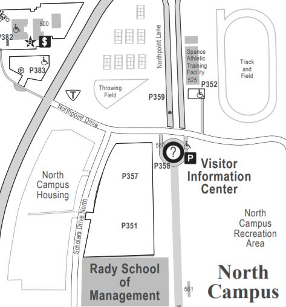
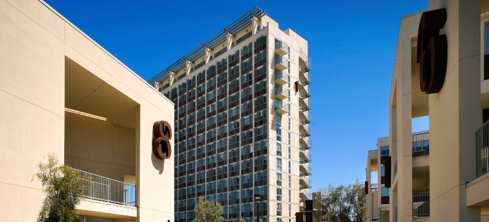
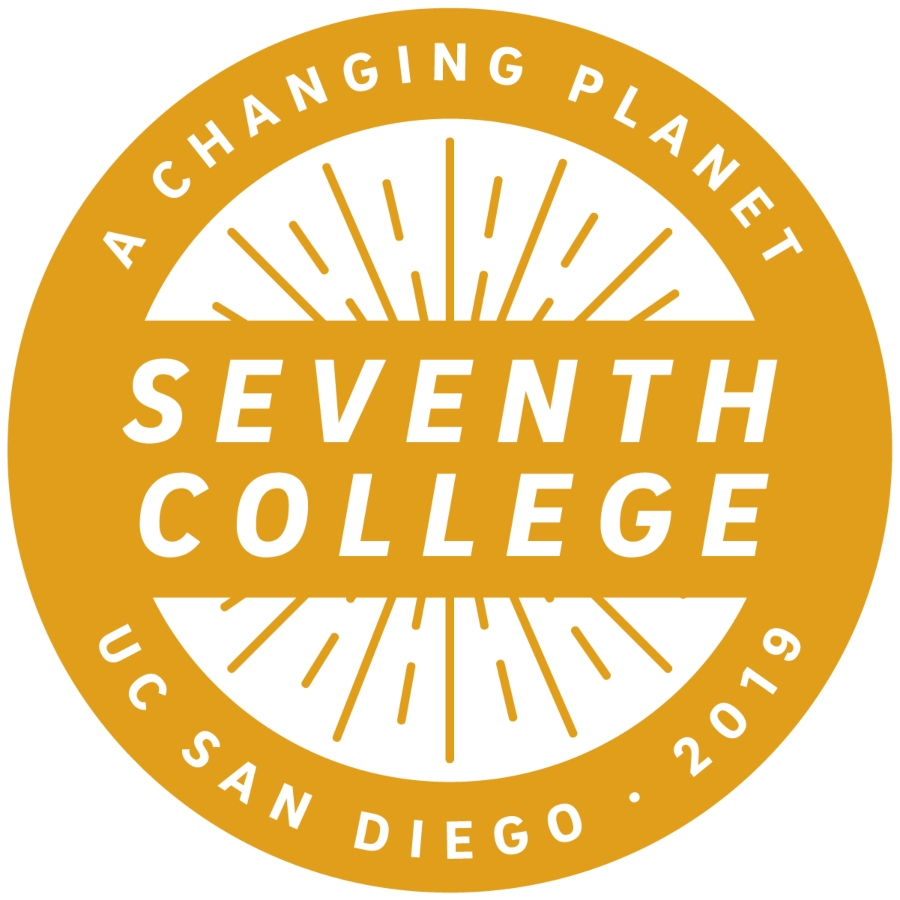

Seventh
A Changing Planet
Seventh College’s theme, "A Changing Planet," encompasses a broad range of pressing global
issues including the climate crisis, mass migration and rapid cultural and technological change.
At Seventh College, we empower students with the knowledge and skills to confront these challenges.
Enrollment(2020): 656 - 2.1% of total enrollment


There are a total of 3 general education requirements for Seventh College: Synthesis,
Alternatives, and High-Impact.
Syntehsis
.The three-course Synthesis sequence includes two lower-division
courses of intensive instruction in university-level writing and one upper-division
project-based course. All three courses emphasize the importance of confronting large-scale,
global issues from an interdisciplinary perspective.
Alternatives
- SYN 1: Synthesis 1 asks students to critically examine through an interdisciplinary and antiracist lens how we communicate about the climate crisis in order to address the question of how we get people to respond and take action.
- SYN 2: Synthesis 2 builds upon the skills developed in Synthesis 1 with a shift in focus to research. Students explore a question of inquiry through course projects and activities. These assignments introduce different research methods including observations and interviews and invite students to apply them to an interdisciplinary research project on the climate crisis or an intersectional challenge.
- SYN 100: Synthesis 100 is an upper division project-based course that builds on skills developed in Synthesis 1 and Synthesis 2 by taking a collaborative, interdisciplinary approach to solving complex problems.
Alternatives courses can be completed any time throughout the undergraduate career,
depending on individual academic goals and preferences. Alternatives courses may overlap with major,
minor, and/or university requirements. Approved Advanced Placement (AP) credit, International Baccalaureate
(IB) credit, and transfer credit will be applied.
High-Impact
- Arts - 2 courses
- Humanities - 2 courses
- Natural Sciences and Engineering - 2 courses
- Quantitative Reasoning - 2 courses
- Social Sciences - 2 courses
Refer
here
to classes that satisfy each discipline. Note that AP and IB credit may be applied
towards these areas.
The High-Impact requirement is satisfied by completing one course (2-4 units) selected
from a variety of engaging experiential learning options. This course may overlap with major, minor, and
university requirements. Expand All
- Deapartment/Program Courses
- Academic Internship Program
- Special Studies Courses
- Study Abroad Programs
- Other Experiential learning Opportunities
Please visit
here to learn more about the courses that satisfy this requirement.
